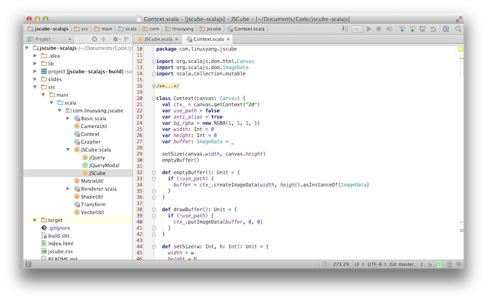
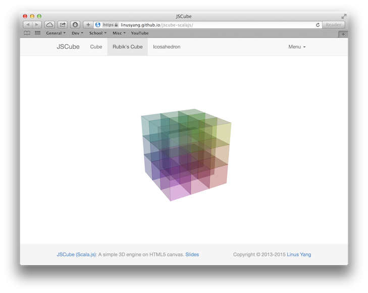

Hello.
Scala.js: Write Web Apps in Scala
- Mar. 9, 2015
- HKFP Meetup Talk by Linus Yang
What is Scala?
- A Scalable Language: the C++ on JVM*
- Object-Oriented and Functional
- Statically typed with type inference
- * True Scala complexity by Yang Zhang
Double it! (Java)
List<Integer> ints = new ArrayList<>();
ints.add(1);
ints.add(2);
ints.add(3);
List<Integer> intsDoubled = new ArrayList<>();
for (Integer i: ints) {
instDoubled.add(i * 2);
}
Double it! (Scala)
val intsDoubled = List(1, 2, 3).map(_ * 2)
Why use Scala over Java?
- Interoperability with Java
- Expressibility vs. verbosity
- Better concurrency model
Who are using Scala?
- Enterprise: Twitter, LinkedIn, FourSquare
- Cluster Computing: Big Data*
- Academia
- * Previous talk on Spark: Big Data Analytics in Scala
Front-end web development
- ... Modern
- HTML5 & CSS3
- Rendering engines: Gecko, WebKit
- Javascript
- Frameworks & Tools: jQuery, Bootstrap
Javascript is not statically typed!
- Scalability
- Debugging
- Performance
Typed variants of Javascript
- Microsoft: Typescript
- Google: Dart & AtScript
- Facebook: Flow
- Mozilla: asm.js
and Scala.js
- Full Scala support at compiler level
- ... everything you know and love about Scala
- Interoperability with Javascript
- ... everything about web: DOM, CSS, jQuery
- Generate efficient Javascript code
Scala(.js) Code
import scala.scalajs.js.JSApp
object Main extends js.JSApp {
def main() = {
var x = 0
while (x < 10)
x += 3
println(x)
// 12
}
}
Compiled Javascript Code
ScalaJS.c.LMain$.prototype.main__V = (function() {
var x = 0;
while ((x < 10)) {
x = ((x + 3) | 0) // "| 0" makes x an int
};
ScalaJS.m.s_Predef$()
.println__O__V(x)
// 12
});
Why Scala.js over alternatives?
- Reliability: Not a toy language
- Ecosystem: SBT, IDE, Unit-testing
- Support: Nice documentation & community
- Integration: Share with server-side code
- Make you a full-stack developer!
Use your favourite Scala IDE!

IntelliJ IDEA by JetBrains
Hello Scala.js: A tutorial*
1. Setup sbt
Make sbt plugin file project/plugins.sbt
addSbtPlugin("org.scala-js" % "sbt-scalajs" % "0.6.1")
Create sbt build file build.sbt
enablePlugins(ScalaJSPlugin)
name := "Scala.js Tutorial"
scalaVersion := "2.11.6" // or any version >= 2.10.2
Specify sbt version at
project/build.properties
sbt.version=0.13.7
2. Write Scala.js app
Create a Scala file at
src/main/scala/tutorial/webapp/TutorialApp.scala
package tutorial.webapp
import scala.scalajs.js.JSApp
object TutorialApp extends JSApp {
def main(): Unit = {
println("Hello world!")
}
}
3. Execute the app by sbt
$ sbt
> run
[info] Compiling 1 Scala source to ...
[info] Running tutorial.webapp.TutorialApp
Hello world!
[success] (...)
Next up: write a web app
Interoperability with Javascript
- Integrate with HTML pages
- Interact with Javascript APIs
Case Study: Port JSCube to Scala.js

JSCube: Simple HTML5 3D engine
- Undergraduate project for Computer Graphics
- Purely upon 2D HTML5 canvas
- Built with jQuery and Bootstrap framework
- Interact with mouse and multi-touch
- Support Retina display
Written in CoffeeScript
- Coffeescript is
- ... a little language compiled to JS
- ... with lots of lovely syntactic sugar
- ... but still dynamically typed
- Now completely rewritten in Scala.js!
Demo
linusyang.github.io/jscube-scalajs
CoffeeScript → Scala.js
- Deal with this
- Non-standard APIs
Javascript Keyword: this
- Evaluates to the current execution context
- Conflict with this in Scala
- Workaround: eleminate "this"
Coffeescript
$("#cube-nav li").click (e) ->
...
if not $(this).hasClass "active"
$(this).addClass "active"
...
Here, this is identical to e.currentTarget
Scala.js
jQuery("#cube-nav li").click((e: MouseEvent) => {
...
if (!(jQuery(e.currentTarget) hasClass "active")) {
jQuery(e.currentTarget) addClass "active"
}
...
})
Non-standard Javascript APIs
- Some only available in specific browsers/frameworks
- ... but Scala.js library only includes standard ones
- Type-checking blocks using undocumented APIs
- Workaround: Extend the Scala.js interface with traits
Port Bootstrap APIs to Scala.js
- Bootstrap is a web framework by Twitter
- Extended jQuery with customized methods
- Here we deal with the modal method
- ... used for control modal dialogs
Original interface of jQuery
val jQuery: JQueryStatic = js.native
trait JQueryStatic extends js.Object {
...
def apply(selector: String): JQuery = js.native
...
}
Note that there is no modal method in JQuery.
Thus, jQuery(...) i.e. jQuery.apply(...)
which has the type JQuery can't call modal method.
Extend interface with traits
trait JQueryModal extends JQuery {
def modal(action: String): JQuery = js.native
}
object jQuery extends JQueryStatic {
override def apply(selector: String): JQueryModal = js.native
}
Object jQuery now can call modal method like
jQuery("#path-modal").modal("show")
Summary
Scala.js: promising front-end devtool
- All good things about Scala
- Type-safety & production-ready quality
- Interop with JS still needs to improve
References & futher reading
JSCube (Scala.js) is open-sourced at
github.com/linusyang/jscube-scalajs
- Slides at linusyang.github.io/jscube-scalajs/slides
- Also open-sourced on Github